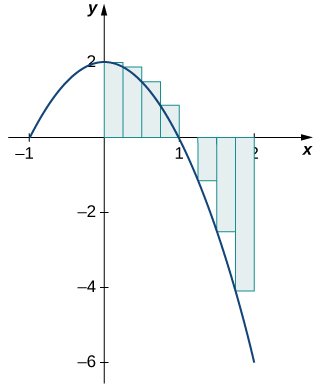

There, we required \(f(x)\) to be continuous and nonnegative. Unfortunately, real-world problems don’t always meet these restrictions. In this section, we look at how to apply the concept of the area under the curve to a broader collection of functions through the use of the definite integral.
The definite integral generalizes the concept of the area under a curve, and it too is defined as a limit. We start by generalizing the Riemann sum construction from the previous section
The points \(x_i\) in \(P\) divide the interval \([a,b]\) into subintervals of the form \([x_0,x_1],[x_1,x_2] , \dots , [x_{n-1} ,x_n]\text{.}\) For each \(1 \leq i \leq n\text{,}\) the \(\boldsymbol{i}\)th subinterval is \([x_{i-1}, x_i]\text{.}\) Then length of the \(i\)th subinterval is
If the subintervals all have the same width, the partition is called a regular partition, and we write \(\Delta x\) for the common length of all \(\Delta x_i\text{.}\)
where \(x_i^*\) is an evaluation point chosen in the \(i\)th subinterval \([x_{i-1}, x_i]\text{.}\) Recall that for a regular partition of \([a, b]\text{,}\)
\begin{gather*}
\Delta x = \dfrac{b-a}{n}
\end{gather*}
So when we allow \(n \rightarrow \infty\) in the limit, the consequence is that \(\Delta x \rightarrow 0\text{.}\) We could see this geometrically; not only did the Riemann sum approximation involve more approximating rectangles under the graph of \(f\text{,}\) but the width of those rectangles shrank as we increased \(n\text{.}\)
includes rectangles of varying widths \(\Delta x_i\text{.}\) In this case, simply including more partition points (and thus more rectangles) will not force the widths of the recangles to all shrink. Intead, in the limit, we will require that the largest width subinterval shrinks as more partition points are added.
The limit appearing in the definition above is a more complicated object than the limits of functions we studied earlier. Given an interval \([a, b]\text{,}\) there are many choices of partitions of \([a, b]\) for which \(\max \Delta x_i \rightarrow 0\) and many choices of evaluations points \(x_i^*\) in each subinterval of such a partition. When we say the limit exists, we mean that the value is always the same real number regardless of the choice of partitions and the choice of evaluation points.
The integral symbol in the previous definition should look familiar. We have seen similar notation in the chapter on Applications of Derivatives 4, where we used the indefinite integral symbol (without the \(a\) and \(b\) above and below) to represent an antiderivative. Although the notation for indefinite integrals may look similar to the notation for a definite integral, they are not the same. A definite integral is a number. An indefinite integral is a family of functions. Later in this chapter we examine how these concepts are related. However, close attention should always be paid to notation so we know whether we’re working with a definite integral or an indefinite integral.
Integral notation goes back to the late seventeenth century and is one of the contributions of Gottfried Wilhelm Leibniz, who is often considered to be the codiscoverer of calculus, along with Isaac Newton. The integration symbol \(\displaystyle\int\) is an elongated S, suggesting summation. On a definite integral, above and below the summation symbol are the boundaries of the interval, \([a,b].\) The numbers \(a\) and \(b\) are \(x\)-values and are called the limits of integration; specifically, \(a\) is the lower limit and \(b\) is the upper limit. To clarify, we are using the word limit in two different ways in the context of the definite integral. First, we talk about the limit of a sum as \(\max\Delta x_i\to 0 .\) Second, the boundaries of the region are called the limits of integration.
We call the function \(f(x)\) the integrand, and the \(dx\) indicates that \(f(x)\) is a function with respect to \(x\text{,}\) called the variable of integration. Note that, like the index in a sum, the variable of integration is a dummy variable, and has no impact on the computation of the integral. We could use any variable we like as the variable of integration:
Previously, we discussed the fact that if \(f(x)\) is continuous on \([a,b],\) then the limit \(\lim_{n\to \infty }\displaystyle{\sum_{i=1}^n f(x_i^* )\Delta x} \) for regular Riemann sums exists and is unique, independent of the choice of evaluation point. This same result is true for non-regular partitions. This leads to the following theorem, which we state without proof.
Functions that are not continuous on \([a,b]\) may still be integrable, depending on the nature of the discontinuities. For example, functions with a finite number of jump discontinuities on a closed interval are integrable.
When a function \(f\) is integrable on \([a, b]\text{,}\) then the limit in Definition 5.2.2 exists and is the same value regardless of the choice of partition and evaluation points. For this reason, if we know that \(f\) is integrable on \([a, b]\text{,}\) we can evaluate the limint in the definition of the definite integral by using any convenient partition and choice of sample points. In particular, when \(f\) is integrable on \([a, b]\text{,}\) we can use a limit of right regular Riemann sums to evaluate the definite integral.
We will explore several cases where we can carry out the limit definition of the definite integral for right regular Riemann sums. A few summation formulas can help simplify the summation process further. These are shown in the next rule, for sums and powers of integers, and we use them in the next set of examples.
Example5.2.10Evaluating an Integral Using the Definition.
Use the definition of the definite integral to evaluate \(\displaystyle{\int_{0}^{2} x^2dx} .\) Use a right-endpoint approximation to generate the Riemann sum.
We first want to set up a Riemann sum. Based on the limits of integration, we have \(a=0\) and \(b=2.\) For \(i=0,1,2\text{ ,…, } n,\) let \(P={x_i}\) be a regular partition of \([0,2].\) Then
Since we are using a right-endpoint approximation to generate Riemann sums, for each \(i\text{,}\) we need to calculate the function value at the right endpoint of the interval \([x_{i-1} ,x_i].\) The right endpoint of the interval is \(x_i,\) and since \(P\) is a regular partition,
Use the definition of the definite integral to evaluate \(\displaystyle{\int_{0}^{3} (2x-1)dx} .\) Use a right-endpoint approximation to generate the Riemann sum.
Evaluating definite integrals this way can be quite tedious because of the complexity of the calculations. Later in this chapter we develop techniques for evaluating definite integrals without taking limits of Riemann sums. However, when \(f\) is non-negative on \([a,b]\text{,}\) we can rely on the fact that definite integrals represent the area under the curve, and we can evaluate definite integrals by using geometric formulas to calculate that area. We do this to confirm that definite integrals do, indeed, represent areas, so we can then discuss what to do in the case of a curve of a function dropping below the \(x\)-axis.
we want to find the area under the curve over the interval \([3,6].\) The formula for the area of a circle is \(A=\pi r^2.\) The area of a semicircle is just one-half the area of a circle, or \(A=(\frac{1}{2})\pi r^2.\) The shaded area in Figure 5.2.13 covers one-half of the semicircle, or \(A=(\frac{1}{4})\pi r^2.\) Thus,
Our study of Riemann sums arose from our attempts to approximate the area under the graph of a continuous, non-negative function on a closed interval \([a,b]\text{,}\) and these same Riemann sums appeared in the limit definition of the definite integral. However, when we defined the definite integral, we lifted the requirement that \(f(x)\) be nonnegative. How do we interpret “the area under the curve” when \(f(x)\) is negative?
Let us return to the Riemann sum. Consider, for example, the function \(f(x)=2-2x^2\) (shown in Figure 5.2.15) on the interval \([0,2].\) Use a regular partition with \(n=8\) subintervals and choose \({x_i^*}\) as the left endpoint of each subinterval. Construct a rectangle on each subinterval of height \(f(x_i^*)\) and width Δ\(x\text{.}\) When \(f(x_i^* )\) is positive, the product \(f(x_i^* )\Delta x\) represents the area of the rectangle, as before. When \(f(x_i^* )\) is negative, however, the product \(f(x_i^* )\Delta x\) represents the negative of the area of the rectangle. The Riemann sum then captures
\begin{equation*}
\displaystyle{\sum_{i=1}^{8}f(x_i^*)\Delta x} =(\text{Area of rectangles above the } x\text{-axis })-(\text{Area of rectangles below the } x\text{-axis })
\end{equation*}

Figure5.2.15.For a function that is partly negative, the Riemann sum is the area of the rectangles above the \(x\)-axis less the area of the rectangles below the \(x\)-axis.
Taking the limit as \(n\to \infty ,\) the Riemann sum approaches the area between the curve above the \(x\)-axis and the \(x\)-axis, less the area between the curve below the \(x\)-axis and the \(x\)-axis, as shown in Figure 5.2.16. Then,
Notice that net signed area can be positive, negative, or zero. If the area above the \(x\)-axis is larger, the net signed area is positive. If the area below the \(x\)-axis is larger, the net signed area is negative. If the areas above and below the \(x\)-axis are equal, the net signed area is zero.
The function produces a straight line that forms two triangles: one from \(x=-3\) to \(x=0\) and the other from \(x=0\) to \(x=3\) (Figure 5.2.18). Using the geometric formula for the area of a triangle, \(A=\dfrac{1}{2}bh,\) the area of triangle \(A_{1}\) , above the axis, is
If \(A_{1}\) is the area above the \(x\)-axis and \(A_{2}\) is the area below the \(x\)-axis, then the net area is \(A_1-A_2.\) Since the areas of the two triangles are equal, the net area is zero.
One application of the definite integral is finding displacement when given a velocity function. If \(v(t)\) represents the velocity of an object as a function of time, then the area under the curve tells us how far the object is from its original position. This is a very important application of the definite integral, and we examine it in more detail later in the chapter. For now, we just look at some basics to get a feel for how this works by studying constant velocities.
When velocity is a constant, the area under the curve is just velocity times time. This idea is already very familiar. If a car travels away from its starting position in a straight line at a speed of 75 mph for 2 hours, then it is 150 mi away from its original position (Figure 5.2.20). Using integral notation, we have
In the context of displacement, net signed area allows us to take direction into account. If a car travels straight north at a speed of 60 mph for 2 hours, it is 120 mi north of its starting position. If the car then turns around and travels south at a speed of 40 mph for 3 hours, it will be back at it starting position (Figure 5.2.21). Again, using integral notation, we have
Suppose we want to know how far the car travels overall, regardless of direction. In this case, we want to know the area between the curve and the \(x\)-axis, regardless of whether that area is above or below the axis. This is called the total area.
Graphically, it is easiest to think of calculating total area by adding the areas above the axis and the areas below the axis (rather than subtracting the areas below the axis, as we did with net signed area). To accomplish this mathematically, we use the absolute value function. Thus, the total distance traveled by the car is
Let \(f(x)\) be an integrable function defined on an interval \([a,b].\) Let \(A_{1}\) represent the area between \(f(x)\) and the \(x\)-axis that lies above the axis and let \(A_{2}\) represent the area between \(f(x)\) and the \(x\)-axis that lies below the axis. Then, the net signed area between \(f(x)\) and the \(x\)-axis is given by
Calculate the \(x\)-intercept as \((2,0)\) (set \(y=0,\) solve for \(x\)). To find the total area, take the area below the \(x\)-axis over the subinterval \([0,2]\) and add it to the area above the \(x\)-axis on the subinterval \([2,6]\) (Figure 5.2.24).
Subsection5.2.4Properties of the Definite Integral
The properties of indefinite integrals apply to definite integrals as well. Definite integrals also have properties that relate to the limits of integration. These properties, along with the rules of integration that we examine later in this chapter, help us manipulate expressions to evaluate definite integrals.
for constant \(c\text{.}\) The integral of the product of a constant and a function is equal to the constant multiplied by the integral of the function.
Although this formula normally applies when \(c\) is between \(a\) and \(b\text{,}\) the formula holds for all values of \(a\text{,}\)\(b\text{,}\) and \(c\text{,}\) provided \(f(x)\) is integrable on the largest interval.
Example5.2.27Using the Properties of the Definite Integral.
Use the properties of the definite integral to express the definite integral of \(f(x)=-3x^3+2x+2\) over the interval \([-2,1]\) as the sum of three definite integrals.
Use the properties of the definite integral to express the definite integral of \(f(x)=6x^3-4x^2+2x-3\) over the interval \([1,3]\) as the sum of four definite integrals.
Example5.2.29Using the Properties of the Definite Integral.
If it is known that \(\displaystyle{\int_{0}^{8} f(x)dx} =10\) and \(\displaystyle{\int_{0}^{5} f(x)dx} =5,\) find the value of \(\displaystyle{\int_{5}^{8} f(x)dx} .\)
If it is known that \(\displaystyle{\int_{1}^{5} f(x)dx} =-3\) and \(\displaystyle{\int_{2}^{5} f(x)dx} =4,\) find the value of \(\displaystyle{\int_{1}^{2} f(x)dx} .\)
A picture can sometimes tell us more about a function than the results of computations. Comparing functions by their graphs as well as by their algebraic expressions can often give new insight into the process of integration. Intuitively, we might say that if a function \(f(x)\) is above another function \(g(x),\) then the area between \(f(x)\) and the \(x\)-axis is greater than the area between \(g(x)\) and the \(x\)-axis. This is true depending on the interval over which the comparison is made. The properties of definite integrals are valid whether \(a\lt b,a=b,\) or \(a\gt b.\) The following properties, however, concern only the case \(a\leq b,\) and are used when we want to compare the sizes of integrals.
Graphing these functions is necessary to understand how they compare over the interval \([0,1].\) Initially, when graphed on a graphing calculator, \(f(x)\) appears to be above \(g(x)\) everywhere. However, on the interval \([0,1],\) the graphs appear to be on top of each other. We need to zoom in to see that, on the interval \([0,1],g(x)\) is above \(f(x).\) The two functions intersect at \(x=0\) and \(x=1\) (Figure 5.2.33).
Figure5.2.33.(a) The function \(f(x)\) appears above the function \(g(x)\) except over the interval \([0,1]\) (b) Viewing the same graph with a greater zoom shows this more clearly.
We can see from the graph that over the interval \([0,1],g(x)\geq f(x).\) Comparing the integrals over the specified interval \([0,1],\) we also see that \(\displaystyle{\int_{0}^{1} g(x)dx} \geq \displaystyle{\int_{0}^{1} f(x)dx} \) (Figure 5.2.34). The thin, red-shaded area shows just how much difference there is between these two integrals over the interval \([0,1].\)
Figure5.2.34.(a) The graph shows that over the interval \([0,1],g(x)\geq f(x),\) where equality holds only at the endpoints of the interval. (b) Viewing the same graph with a greater zoom shows this more clearly.
We often need to find the average of a set of numbers, such as an average test grade. Suppose you received the following test scores in your algebra class: 89, 90, 56, 78, 100, and 69. Your semester grade is your average of test scores and you want to know what grade to expect. We can find the average by adding all the scores and dividing by the number of scores. In this case, there are six test scores. Thus,
Suppose, however, that we have a function \(v(t)\) that gives us the speed of an object at any time \(t\text{,}\) and we want to find the object’s average speed. The function \(v(t)\) takes on an infinite number of values, so we can’t use the process just described. Fortunately, we can use a definite integral to find the average value of a function such as this.
Let \(f(x)\) be continuous over the interval \([a,b]\) and let \([a,b]\) be divided into \(n\) subintervals of width \(\Delta x=\displaystyle\frac{b-a}{n}.\) Choose an evaluation point \(x_i^* \) in each subinterval and calculate \(f(x_i^* )\) for \(i=1,2, \dots, n.\) In other words, consider each \(f(x_i^*)\) as a sampling of the function over each subinterval. The average value of the function may then be approximated as
This is a Riemann sum. To improve the approximations, we increase the value of \(n\text{.}\) If we allow \(n \rightarrow infty\text{,}\) we obtain the following definition.
Let \(f(x)\) be continuous over the interval \([a,b].\) Then, the average value of the function \(f(x)\) (or \(f_{\text{ave}}\)) on \([a,b]\) is given by
The region is a trapezoid lying on its side, so we can use the area formula for a trapezoid \(A=\frac{1}{2}h(a+b),\) where \(h\) represents height, and \(a\) and \(b\) represent the two parallel sides. Then,
The definite integral can be used to calculate net signed area, which is the area above the \(x\)-axis less the area below the \(x\)-axis. Net signed area can be positive, negative, or zero.
Continuous functions on a closed interval are integrable. Functions that are not continuous may still be integrable, depending on the nature of the discontinuities.
In the following exercises, given \(L_n\) or \(R_n\) as indicated, express their limits as \(n \to \infty\) as definite integrals, identifying the correct intervals.
In the following exercises, evaluate the integrals of the functions graphed using the formulas for areas of triangles and circles, and subtracting the areas below the \(x\)-axis.
In the following exercises, use averages of values at the left (\(L\)) and right (\(R\)) endpoints to compute the integrals of the piecewise linear functions with graphs that pass through the given list of points over the indicated intervals.
Suppose that \(\displaystyle \int_0^4 f(x)\, dx = 5\) and \(\displaystyle \int_0^2 f(x)\, dx = -3\text{,}\) and \(\displaystyle \int_0^4 g(x)\, dx = -1\) and \(\displaystyle \int_0^2 g(x)\, dx = 2\text{.}\) In the following exercises, compute the integrals.
In the following exercises, use the identity \(\displaystyle \int_{-A}^A f(x)\, dx = \int_{-A}^0 f(x)\, dx + \int_0^A f(x)\, dx\) to compute the integrals.
In the following exercises, given that \(\displaystyle \int_0^1 x\, dx = \frac{1}{2}\text{,}\)\(\displaystyle \int_0^1 x^2\, dx = \frac{1}{3}\text{,}\) and \(\displaystyle \int_0^1 x^3\, dx = \frac{1}{4}\text{,}\) compute the integrals.
Show that \(\displaystyle \int_0^{\pi/2} \sin t\, dt \geq \frac{\pi}{4}\text{.}\) (Hint:\(\sin t \geq \dfrac{2t}{\pi}\) over \(\left[0, \dfrac{\pi}{2}\right]\))
\(\cos(t) \geq \dfrac{\sqrt{2}}{2}\) over \(\left[-\dfrac{\pi}{4}, \dfrac{\pi}{4}\right]\text{.}\) Multiply by the length of the interval to get the inequality.
In the following exercises, find the average value \(f_{\text{ave}}\) of \(f\) between \(a\) and \(b\text{,}\) and find a point \(c\) where \(f(c) = f_{\text{ave}}\text{.}\)
In the following exercises, approximate the average value using Riemann sums \(L_{100}\) and \(R_{100}\text{.}\) How does your answer compare with the exact given answer?
In the following exercises, compute the average value using the left Riemann sums \(L_N\) for \(N = 1, 10, 100\text{.}\) How does the accuracy compare with the given exact value?
\(L_1 = 0\text{,}\)\(L_{10} \times \left(\dfrac{1}{2}\right) = 8.743493\text{,}\)\(L_{100} \times \left(\dfrac{1}{2}\right) = 12.861728\text{.}\) The exact answer is \(\approx 26.799\text{,}\) so \(L_{100}\) is not accurate.
\(L_1 \times \left(\dfrac{1}{\pi}\right) = 1.352\text{,}\)\(L_{10} \times \left(\dfrac{1}{\pi}\right) = -0.1837\text{,}\)\(L_{100} \times \left(\dfrac{1}{\pi}\right) = -0.2956\text{.}\) The exact answer is \(\approx -0.303\text{,}\) so \(L_{100}\) is not accurate to the first decimal.
Suppose that \(\displaystyle A = \int_0^{2\pi} \sin^2 t\, dt\) and \(\displaystyle B = \int_0^{2\pi} \cos^2 t\, dt\text{.}\) Show that \(A + B = 2\pi\) and \(A = B\text{.}\)
Suppose that \(\displaystyle A = \int_{-\pi/4}^{\pi/4} \sec^2 t\, dt = 2\) and \(\displaystyle B = \int_{-\pi/4}^{\pi/4} \tan^2 t\, dt\text{.}\) Show that \(A - B = \dfrac{\pi}{2}\text{.}\)
Show that the average value of \(\sin^2 t\) over \([0, 2\pi]\) is equal to \(1/2\text{.}\) Without further calculation, determine whether the average value of \(\sin^2 t\) over \([0, \pi]\) is also equal to \(1/2\text{.}\)
Show that the average value of \(\cos^2 t\) over \([0, 2\pi]\) is equal to \(1/2\text{.}\) Without further calculation, determine whether the average value of \(\cos^2(t)\) over \([0, \pi]\) is also equal to \(1/2\text{.}\)
\(\displaystyle \int_0^{2\pi} \cos^2 t\, dt = \pi\text{,}\) so divide by the length \(2\pi\) of the interval. Since \(\cos^2 t\) has period \(\pi\text{,}\) yes, it is true.
Explain why the graphs of a quadratic function (parabola) \(p(x)\) and a linear function \(\ell(x)\) can intersect in at most two points. Suppose that \(p(a) = \ell(a)\) and \(p(b) = \ell(b)\text{,}\) and that \(\displaystyle \int_a^b p(t)\, dt \gt \int_a^b \ell(t)\, dt\text{.}\) Explain why \(\displaystyle \int_c^d p(t)\, dt \gt \int_c^d \ell(t)\, dt\) whenever \(a \leq c \lt d \leq b\text{.}\)
Suppose that parabola \(p(x) = ax^2 + bx + c\) opens downward (\(a \lt 0\)) and has a vertex with \(y\)-coordinate \(y = c - \dfrac{b^2}{4a} \gt 0\text{.}\) For which interval \([A, B]\) is \(\displaystyle \int_A^B (ax^2 + bx + c)\, dx\) as large as possible?
The integral is maximized when one uses the largest interval on which \(p\) is nonnegative. Thus, \(A = \dfrac{-b + \sqrt{b^2 - 4ac}}{2a}\) and \(B = \dfrac{-b - \sqrt{b^2 - 4ac}}{2a}\text{.}\)
Suppose \([a, b]\) can be subdivided into subintervals \(a = a_0 \lt a_1 \lt a_2 \lt \cdots \lt a_N = b\) such that either \(f \geq 0\) over \([a_{i-1}, a_i]\) or \(f \leq 0\) over \([a_{i-1}, a_i]\text{.}\) Set \(\displaystyle A_i = \int_{a_{i-1}}^{a_i} f(t)\, dt\text{.}\)
Suppose \(f\) and \(g\) are continuous functions such that \(\displaystyle \int_c^d f(t)\, dt \leq \int_c^d g(t)\, dt\) for every subinterval \([c, d]\) of \([a, b]\text{.}\) Explain why \(f(x) \leq g(x)\) for all values of \(x\) in \([a, b]\text{.}\)
If \(f(t_0) \gt g(t_0)\) for some \(t_0 \in [a, b]\text{,}\) then since \(f - g\) is continuous, there is a subinterval \([c, d] \subseteq [a, b]\) containing \(t_0\) such that \(f(t) \gt g(t)\) over \([c, d]\text{,}\) and then \(\displaystyle \int_c^d f(t)\, dt \gt \int_c^d g(t)\, dt\) over this interval.
Suppose the average value of \(f\) over \([a, c]\) is \(1\) and the average value of \(f\) over \([c, b]\) is \(1\text{,}\) where \(a \lt c \lt b\text{.}\) Show that the average value of \(f\) over \([a, b]\) is also \(1\text{.}\)
Suppose that \([a, b]\) can be partitioned taking \(a = a_0 \lt a_1 \lt \cdots \lt a_N = b\) such that the average value of \(f\) over each subinterval \([a_{i-1}, a_i]\) is equal to \(1\) for each \(i = 1, \ldots, N\text{.}\) Explain why the average value of \(f\) over \([a, b]\) is also equal to \(1\text{.}\)
Suppose that for each \(i\) such that \(1 \leq i \leq N\) one has \(\displaystyle \int_{i-1}^i f(t)\, dt = i\text{.}\) Show that \(\displaystyle \int_0^N f(t)\, dt = \frac{N(N + 1)}{2}\text{.}\)
Suppose that for each \(i\) such that \(1 \leq i \leq N\) one has \(\displaystyle \int_{i-1}^i f(t)\, dt = i^2\text{.}\) Show that \(\displaystyle \int_0^N f(t)\, dt = \frac{N(N + 1)(2N + 1)}{6}\text{.}\)
[T] Compute the left and right Riemann sums \(L_{10}\) and \(R_{10}\) and their average \(\dfrac{L_{10} + R_{10}}{2}\) for \(f(t) = t^2\) over \([0, 1]\text{.}\) Given that \(\displaystyle \int_0^1 t^2\, dt = 0.\overline{3}\text{,}\) to how many decimal places is \(\dfrac{L_{10} + R_{10}}{2}\) accurate?
[T] Compute the left and right Riemann sums, \(L_{10}\) and \(R_{10}\text{,}\) and their average \(\dfrac{L_{10} + R_{10}}{2}\) for \(f(t) = 4 - t^2\) over \([1, 2]\text{.}\) Given that \(\displaystyle \int_1^2 (4 - t^2)\, dt = 1.\overline{6}\text{,}\) to how many decimal places is \(\dfrac{L_{10} + R_{10}}{2}\) accurate?
Estimate \(\displaystyle \int_0^1 t\, dt\) using the left and right endpoint sums, each with a single rectangle. How does the average of these left and right endpoint sums compare with the actual value \(\displaystyle \int_0^1 t\, dt\text{?}\)
Estimate \(\displaystyle \int_0^1 t\, dt\) by comparison with the area of a single rectangle with height equal to the value of \(t\) at the midpoint \(t = \frac{1}{2}\text{.}\) How does this midpoint estimate compare with the actual value \(\displaystyle \int_0^1 t\, dt\text{?}\)
For any value of \(a\text{,}\) the graph over \([a, a + 1]\) is a horizontal shift of the graph over \([0, 1]\text{,}\) so the net areas above and below the axis do not change and the average remains zero.
If \(f\) is \(1\)-periodic (\(f(t + 1) = f(t)\)), odd, and integrable over \([0, 1]\text{,}\) is it always true that \(\displaystyle \int_0^1 f(t)\, dt = 0\text{?}\)
If \(f\) is \(1\)-periodic and \(\displaystyle \int_0^1 f(t)\, dt = A\text{,}\) is it necessarily true that \(\displaystyle \int_a^{1+a} f(t)\, dt = A\) for all \(a\text{?}\)
![Runestone Academy logo]()
![MathJax logo]()